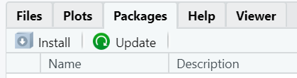

| ID: | Password: | ||||
|
|
|||||
Set up
R packages are a collection of R functions, compiled code, and sample
data. When in RStudio, you can install packages by clicking on
Packages followed by Install as shown in the
picture below.

Once a package is installed in order to use the functions in your
code you must load the library in a code chunk. Load the tidyverse
package by typing library(tidyverse). This is equivalent to
using the import function in Python.
The package tidyverse is one of the major packages used
in R. You will almost always need to have it loaded.
tidyverse is actually a package consisting of 8 packages
that share a common design on how data should be structured.

Data
Often times you will need to read in a dataset. Common functions for
this are read_csv() for a .csv, read_delim()
for a .txt, and load() for a .rda file.
R also has many pre-loaded data sets that you can access. We are
going to use the flights dataset from the
nycflights13 package shown below.
library(nycflights13)
flightsHelp documentation
As a data scientist, you need to be an independent learner. That means you need to be able to learn and apply new functions without someone holding your hand. In this course, there will be a lot of times you will need to discover how to use a new function or determine what function you should be using.
There are a LOT of resources out there for you:
- help documentation in R
- Google search/stack exchange/stack overflow will be your best friend
- ggplot2 textbook provides examples
We are going to use the ggplot() function to make plots.
Let’s look at the help documentation to see what arguments we can
specify as well as some examples.
You can either go to help and search the function name:

or type ?functionname in the console. Run the code chunk
below:
?ggplotPlotting
The grammar of graphics states that in order to make a plot we need 3 components: data, aesthetics, and geometries. There are additional components: facets, scales, coordinates, and themes that we will learn throughout the course to improve our display.
Time to make our first plot.
Use the flights dataset to make a scatterplot of
arr_delay by dep_delay. Fill in
dep_delay for the x aesthetic and arr_delay
for the y aesthetic. Add the layer geom_point() to make a
scatterplot.
ggplot(data = ___, mapping = aes(x = ___, y = ___)) +
____Notice we always initialize a plot with the function
ggplot(). Plotting is made easy in R with layering! Anytime
you want to add a component to the plot you use + to add a
layer.
Let’s try another plot. Make a bar plot of origin in the
flights data set. Map origin to the x
aesthetic and this time add on the layer geom_bar(). (If we
had pre-counted data instead of a list we would use the layer
geom_col()).
Other basic geometry layers include geom_line() for a
linegraph, geom_histogram() for a histogram, and
geom_boxplot() for a boxplot.
Data wrangling
Often times before making a plot you may need to do some data wrangling to get the data of interest. We will introduce a few common functions.
<- is an assignment operator
%>% is a pipe operator
Similar to the + operator in ggplot(), the
%>% operator makes it easy to chain together multiple
criteria.
flights_ohare <- flights %>%
filter(dest == "ORD")What the above code says is pipe the data flights into
the filter function, select only the rows in which the variable
dest equals “ORD”, and store this output as
flights_ohare. In RStudio, the new dataset will appear in
the environment pane.
filter(): subsets a dataset based on observation (rows) based on a conditional statement
Subset the flights dataset to only contain observations
in which dep_delay is greater than 0. Call the new dataset
flights_delayed.
select(): subsets a dataset to only include specified variables (columns)
mutate(): creates a new variable based on the formula defined.
Let’s figure out if flight time was longer or shorter than expected.
Select only the variables dep_delay and
arr_delay. Create a new variable called
flight_delay, where
flight_delay = arr_delay - dep_delay. Notice we are not
storing the output here so the result will be printed.
flights %>%
select() %>%
mutate()group_by(): takes an existing data frame and converts it into a grouped data frame
summarize(): reduces the dataframe to a summary of specified values
Let’s figure out if a particular origin is more likely
to have a delayed flight (dep_delay) by computing the
mean() and sd() by origin. We
will need to remove the NA values by settingna.rm = TRUE
inside the mean() and sd() functions.
flights %>%
group_by() %>%
summarize(mean = mean(),
sd = sd())Factor variables
Factor (or categorical) variables can be tricky to work with in that they are inherently ordered (generally by default alphabetically)
levels( factor(flights$origin) )Here our levels are “EWR”, “JFK”, “LGA”, notice in our barplot in the Plotting section the bars appeared in this order. If we want to change the order of our bars we need to change the order of our levels.
flights <- flights %>%
mutate(
origin = factor(origin,
levels = c( "JFK", "LGA", "EWR")
)
)By assigning the new variable as the existing variable
origin we are overwriting the previous
variable. Same with assigning the new dataset to be
flights. Be very careful when overwriting data and
variables! You only want to do this if you are not altering the dataset
- you do not want to lose information!
Now make the bar plot of origin in the
flights data set again and observe how the bar order has
changed.
Advanced factor ordering
Advanced ordering what if we had a lot of variables and wanted to order the factors from low to high? or high to low?
Let’s reorder the variable dest from low to high counts.
First we need to get the counts for each dest. Then we will
sort the data using arrange based on the number of counts.
Next we will reorder the variable using the fct_inorder()
function, set ordered = TRUE. This will set the factor
order to be based on order of appearance.
dest_ordered <- flights %>%
#get counts for dest
count(___) %>%
#sort data from low to high counts
#look at data output to see name of new variable to put here
arrange(___) %>%
#Reorder factor levels based on order of appearance
mutate(dest = ___(dest, ordered = ___))Make a bar plot of dest_ordered. This is now pre-counted
data so use the layer geom_col().